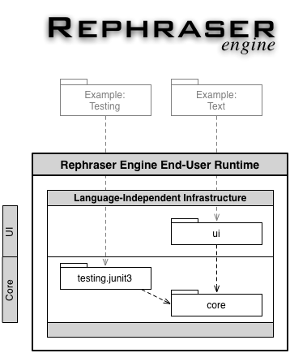

Introduction
The Rephraser Engine is an Eclipse-based library that expedites the development of refactoring tools. It contains the following components:
- The refactoring component allows plug-ins to easily contribute refactorings to the Eclipse user interface.
- The virtual program graph (VPG) component provides a language-independent program database and indexing infrastructure.
- The testing component provides several utility classes for constructing JUnit test suites.
These components share a common suite of utility classes, many of which are useful to clients as well.
The dependencies among the projects comprising the Rephraser Engine are as follows. Note that the Refactoring component does not
require that the VPG component be used.

"Rephraser" is an acronym which stands for
Rapid
Eclipse
Prototyping
Host for
Research on
Abstract
Specified
Equivalence-based
Refactoring.
Features
Refactoring
The Refactoring component extends the Eclipse Language ToolKit (LTK) and
- contributes a Refactor menu to the workbench menu bar, as well as to the context menu for resource selections in the workbench;
- provides an extension point that allows refactorings to be contributed to this menu; and
- does not require any user interface code to be written for simple refactorings.
VPG
The VPG component
- provides a set of base classes for building persistable program graphs;
- provides an indexing infrastructure by registering a resource listener and automatically updating program graphs as workspace resources change; and
- contributes a "(Debugging)" sub-menu to the workbench Refactoring menu, which provides various actions for viewing, analyzing, and manipulating VPG databases.
Testing
The Testing component
- provides classes to construct a test suite (dynamically) from set of files or from a set of "markers" in a single file; and
- provides utility classes to aid in combinatorial testing.
Common Components/Miscellany
The Rephraser Engine also includes
- classes to aid in contributing to the Eclipse Search UI (e.g., SearchResult),
- assorted classes to aid in writing common static analyses (e.g., SymbolTable),
- several utility classes (e.g., TwoKeyHashMap, Spawner, StringUtil, OffsetLength).